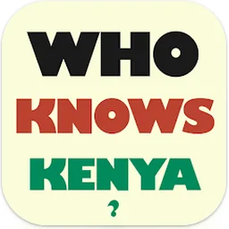
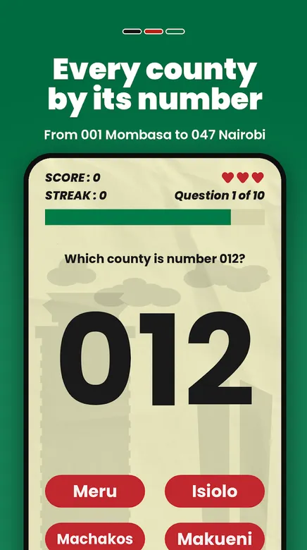
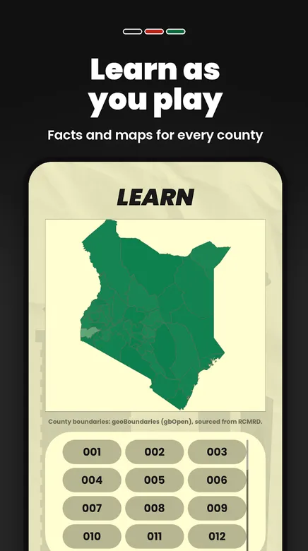
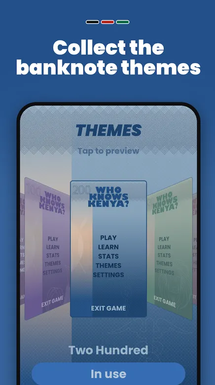

Who Knows: Kenya
na OHB Studio · msanidi Bradley Omondi · Android
Mchezo wa maswali kuhusu kaunti 47 na maeneobunge 290 ya Kenya. Anza na 001 Mombasa hadi 047 Nairobi, kisha jaribu raundi ngumu zaidi. Hali ya Kujifunza ina taarifa na ramani za kila kaunti.
- Kutoka namba hadi kaunti
- Kutoka kaunti hadi namba
- Itaje kwa umbo lake
- Maeneobunge haya yako katika kaunti gani?
- Gusa kaunti kwenye ramani
- Tafuta maneno: kaunti
- Tafuta maneno: maeneobunge
Imetengenezwa Kenya, inahusu Kenya, na inageuza masomo ya kijamii kuwa mchezo. Wachezaji wawili wanaweza kutumia simu moja, au marafiki wakacheza pamoja kwenye Wi-Fi moja. Hilo linaifanya iwe nzuri kwa usiku wa michezo ya familia, madarasa na marudio.
Ukaguzi wa programu salama wa B³
- Umri unaofaaUmri 3+
- Gumzo na wageniHakuna gumzo lililoorodheshwa
- Wachezaji wengiSimu moja, au Wi-Fi moja tu
- Ubao wa alama wa kila sikuTumia jina la utani, si jina halisi
- MatangazoHakuna yaliyoorodheshwa
- Manunuzi ndani ya programuKsh 50 – 1,000 kwa kila kitu
- Taarifa zinazokusanywa na kushirikiwaVitambulisho vya kifaa, mahali kwa makadirio, shughuli za programu, uchunguzi wa hitilafu
- Zimesimbwa zikitumwaNdiyo
- Kufuta taarifa zakoHakuna njia ya kuomba zifutwe
- Ukubwa wa kupakuaMB 185, kwa hivyo tumia Wi-Fi
Chanzo: ukurasa wa Google Play (toleo 0.1.1, lililosasishwa 14 Oktoba 2026), sehemu yake ya Usalama wa data na picha za skrini za duka, vilivyokaguliwa 20 Novemba 2026.
Maudhui bora ya kujifunzia kuhusu Kenya yanayofanya kazi bila mtandao. Kabla ya kumpa mtoto, washa idhini ya manunuzi kwenye Google Play (Mipangilio → Uthibitishaji → Hitaji uthibitishaji kwa manunuzi). Programu pia hushiriki vitambulisho vya kifaa na mahali kwa makadirio na kampuni nyingine, kwa hivyo watoto wadogo wacheze pamoja na mtu mzima.






Picha za skrini zimefichwa katika hali ya data kidogo.